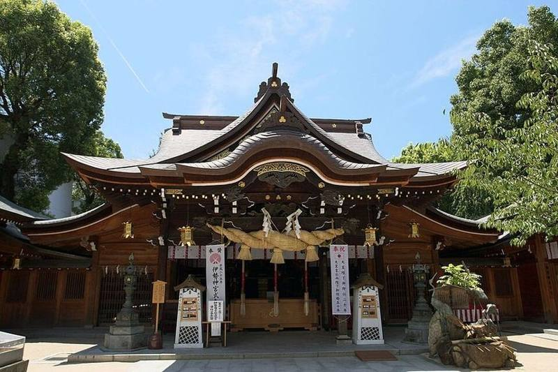

櫛田神社
Kushida Shrine
Hakata's guardian shrine since 757, and the home of the Yamakasa festival.
Free · TempleA first-timer's guide · 福岡
Tell it where you are sleeping and what you love. It builds every day around breakfast, lunch, a tea break and dinner — then hands you the whole schedule to drag, retime and rewrite.
Tap any photograph to open the place.
Selected for a first visit · 厳選
Four things the plan is built around — each one is a stop in the itinerary below.

櫛田神社
Hakata's guardian shrine since 757, and the home of the Yamakasa festival.
Free · Temple
中洲屋台
Riverside food stalls after dark: ramen, yakitori and oden, one counter at a time.
Cash · Evening熊本城
One of Japan's three great castles, 40 minutes away by shinkansen.
Day trip · ¥4,750
太宰府
Tenmangu shrine and Kyushu's old capital, half an hour south of Tenjin.
Day trip · ¥480Breakfast, lunch, dinner · 食
Twelve places worth planning a day around. Each one is a real counter or street in Fukuoka and Kyushu, with what to order and why we picked it.
The planner · 旅程
Pick your hotel, your length and your interests. Then drag anything: every stop can be moved, retimed or stretched.